Chapter 10 Linear Regression
10.1 Correlation
A correlation exists between two variables when the values of one are somehow associated with the values of the other in some way.
A linear correlation exists between two variables when there is a correlation and the plotted points of paired data result in a pattern that can be approximated by a straight line.
Suppose we found the age and weight of a sample of 10 adults. Create a scatterplot of the data below. Is there any relationship between the age and weight of these adults?
Age 24 30 41 28 50 46 49 35 20 39
Wt 256 124 320 185 158 129 103 196 110 130
age<-c(24, 30, 41, 28, 50, 46, 49, 35, 20, 39)
weight<-c(256, 124, 320, 185, 158, 129, 103, 196, 110, 130)
xyplot(weight~age, xlab="Age of Adults", ylab="Weight in Lb", main="Weight V.S Age", col="blue",pch=19)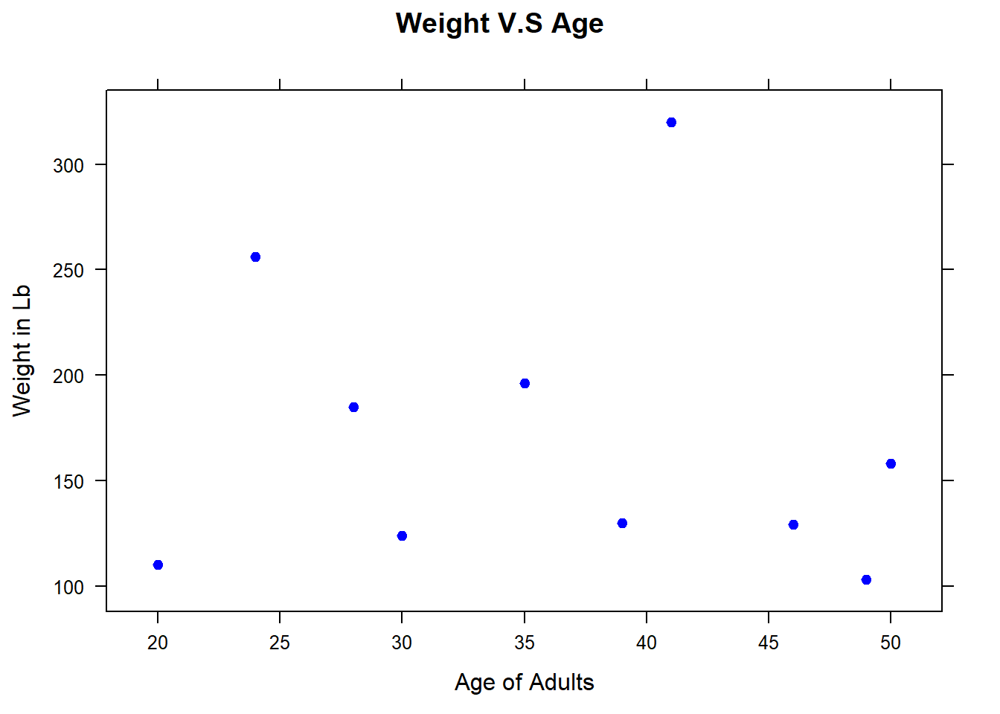
Suppose we found the height and weight of a sample of 10 adults. Create a scatterplot of the data below. Is there any relationship between the height and weight of these adults? Is it positive or negative? Weak or strong?
Ht 74 65 77 72 68 60 62 73 61 64
Wt 256 124 320 185 158 129 103 196 110 130
height<-c(74, 65, 77, 72, 68, 60, 62, 73, 61, 64 )
weight<-c(256, 124, 320, 185, 158, 129, 103, 196, 110, 130)
xyplot(weight~height, xlab="Height of adults", ylab="Weight of adults", main="Weight V.S Height", col="red", pch=16)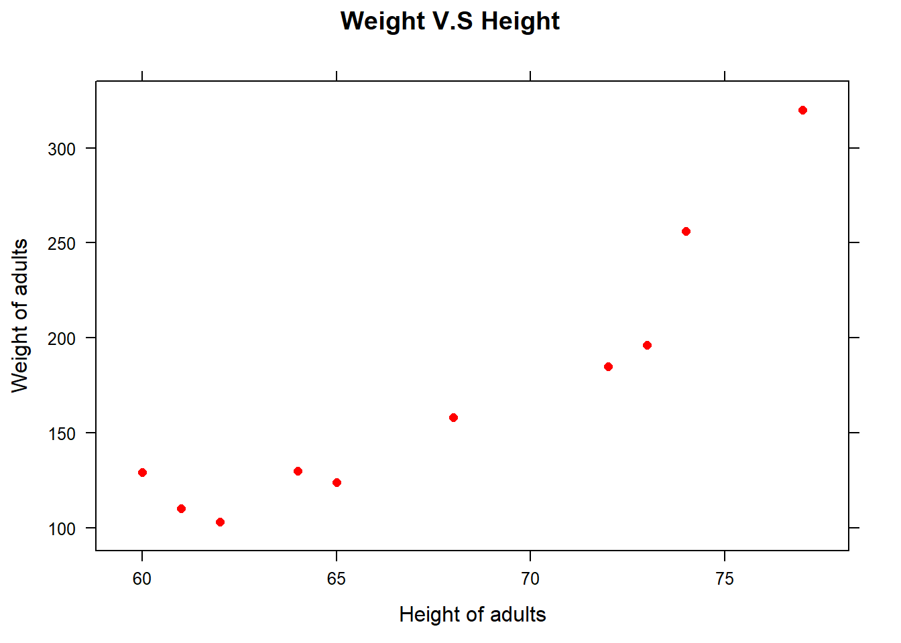
10.2 Identify as having a positive association, a negative association, or no association.
- Heights of mothers & heights of their adult daughters
- Age of a car in years and its current value
- Weight of a person and calories consumed
- Height of a person and the person’s birth month
- Number of hours spent in safety training and the number of accidents that occur.
10.3 Correlation Coefficient: r
- A quantitative assessment of the strength & direction of the linear relationship between bivariate, quantitative data
- Pearson’s sample correlation is used most
- parameter - \(\rho\)
- statistic - r
- \[r=\frac{1}{n-1}\sum(\frac{x_i-\bar{x}}{s_x})(\frac{y_i-\bar{y}}{s_y})\]
10.4 Requirements for Linear Correlation
- The sample of paired (x, y) data is a simple random sample of quantitative data.
- Visual examination of the scatterplot must confirm that the points approximate a straight-line pattern.
- The outliers must be removed if they are known to be errors. The effects of any other outliers should be considered by calculating r with and without the outliers included.
10.5 Properties of r
- legitimate values of r is \(-1\leq r\leq 1\)
- Strong positive correlation: \(0.8\leq r\leq 1\)
- Strong negative correlation: \(-1\leq r\leq -0.8\)
- Moderate positive correlation: \(0.5\leq r\leq 0.8\)
- Moderate negative correlation: \(-0.8\leq r\leq -0.5\)
- Weak positive correlation: \(0< r\leq 0.5\)
- Weak negative correlation: \(-0.5< r< 0\)
- No correlation: \(r\approx 0\)
- If all values of either variable are converted to a different scale, the value of r does not change
- The value of r is not affected by the choice of x and y. Interchange all x- and y-values and the value of r will not change.
- r measures strength of a linear relationship.
- r is very sensitive to outliers, which can dramatically affect the value of r.
10.6 Interpretation of r
There is a direction, strength, type of association between x and y.
Speed Limit(mph) 55 50 45 40 30 20
Avg. # of accidents(per week) 28 25 21 17 11 6
Calculate r. Interpret r in context.
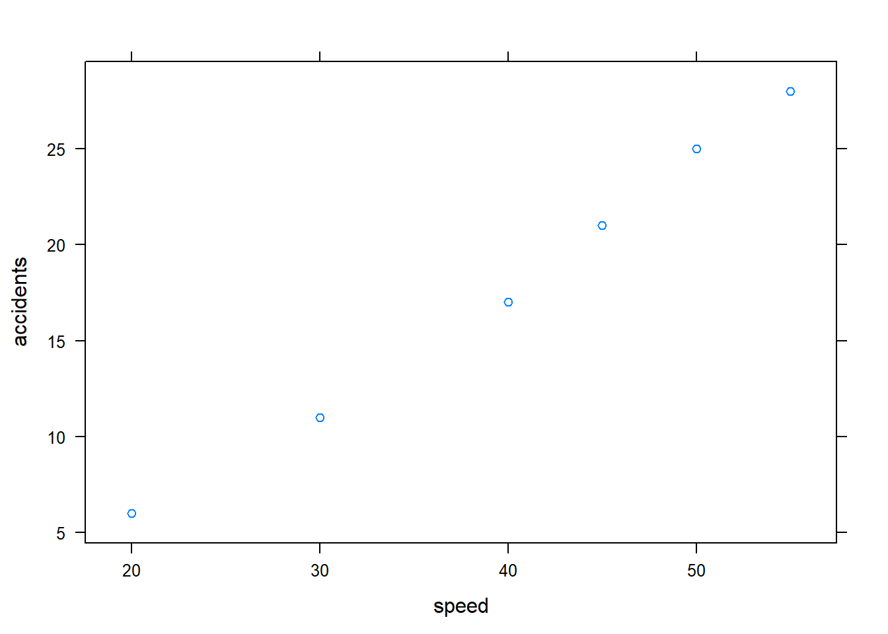
## [1] 0.9963587Interpretation: There is a positve, strong, linear association between the speed limit and the number of accidents occured per week.
10.7 Antother Example:
Find the correlation for these points:
x -3 -1 1 3 5 7 9
Y 40 20 8 4 8 20 40
What does this correlation mean? Sketch the scatterplot
10.8 Practice
The paired shoe / height data from five males are listed below. Find and interpret the value of the correlation coefficient r.
Shoe print(cm) 29.7 29.7 31.4 31.8 27.6
Height (cm) 175.3 177.8, 185.4 175.3 172.7
shoe_print<-c(29.7, 29.7, 31.4, 31.8, 27.6)
height<-c(175.3, 177.8, 185.4, 175.3, 172.7)
xyplot(height~shoe_print)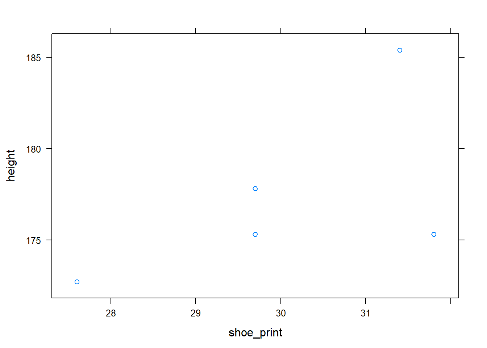
## [1] 0.5912691There is a positive, moderate, linear association (correlation) between the shoe print size and the height.
Correlation does not imply causation!!!!!!!!!
Correlation does not imply causation!!!!!!!!!
Correlation does not imply causation!!!!!!!!!
10.9 Linear Regression
10.10 Bivariate data
- x - variable: is the independent or explanatory variable
- y- variable: is the dependent or response variable
- Use x to predict y
10.11 Regression
The regression equation expresses a relationship between x (called the explanatory variable, predictor variable or independent variable), and \(\hat{y}\) (called the response variable or dependent variable). Typical equation:
\[\hat{y}=a+bx\]
where
+ \(\hat{y}\) is the predicted y value
+ \(b\) is the slope. it is the approximate amount by which y increases when x increases by 1 unit
+ \(a\) is the y-intercept. it is the approximate height of the line when \(x =0\). Some situations, the y-intercept has no meaning
10.12 Least Squares Regression Line: LSRL
- The line that gives the best fit to the data set
- The line that minimizes the sum of the squares of the deviations from the line
10.13 Interpretations
- Define x and \(\hat{y}\)
- Slope: For each unit increase in x, there is an approximate increase/decrease of b in y.
- y-intercept: The value of y when \(x=0\). Write it in context.
- Correlation coefficient (r): There is a direction, strength, linear of association between x and y.
10.14 Example
The ages (in months) and heights (in inches) of seven children are given.
x 16 24 42 60 75 102 120
y 24 30 35 40 48 56 60
age<-c(16, 24, 42, 60, 75, 102, 120)
height_kids<-c(24, 30, 35, 40, 48, 56, 60)
lsrl_kids<-lmGC(height_kids~age, graph = TRUE)
lsrl_kids##
## Linear Regression
##
## Correlation coefficient r = 0.9941
##
## Equation of Regression Line:
##
## height_kids = 20.4036 + 0.3421 * age
##
## Residual Standard Error: s = 1.5958
## R^2 (unadjusted): R^2 = 0.9882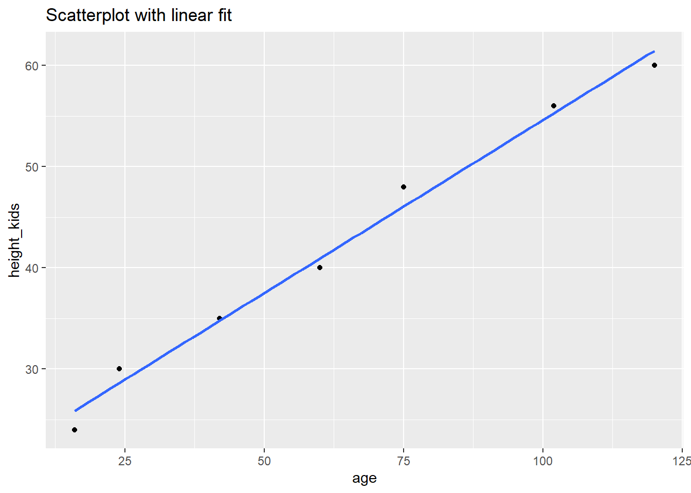
Find the LSRL. Define x and \(\hat{y}\).
\[\hat{y}=20.40+0.34x\] x is the age of children in months. \(\hat{y}\) is the predicted height of children in inches.Interpret the slope, y-intercept and correlation
coefficient in the context of the problem.
Slope: For each month increas in the age of children, there is approximately increase of 0.34 inches in children’s heights.
y-intercept: When a baby was born, his/her predicted height was 20.40 inches.
correlation coefficient: There is a strong, postive, linar association between the age of chidren and the height of children.
- Predict the height of a child who is 4.5 years old.
## Predict height_kids is about 38.88,
## give or take 1.712 or so for chance variation.The predicted height of a child who is 4.5 years old is 38.88 inches.
- Predict the height of someone who is 20 years old.
## Predict height_kids is about 102.5,
## give or take 3.422 or so for chance variation.10.15 Extrapolation
- The LSRL should not be used to predict y for values of x outside the data set.
- It is unknown whether the pattern observed in the scatterplot continues outside this range.
10.16 Use A Dataset to practice
- Plot the student heights on the y-axis and their handspans (of their writing hand) on the x-axis.
##
## Linear Regression
##
## Correlation coefficient r = 0.601
##
## Equation of Regression Line:
##
## Height = 113.9536 + 3.1166 * Wr.Hnd
##
## Residual Standard Error: s = 7.9088
## R^2 (unadjusted): R^2 = 0.3612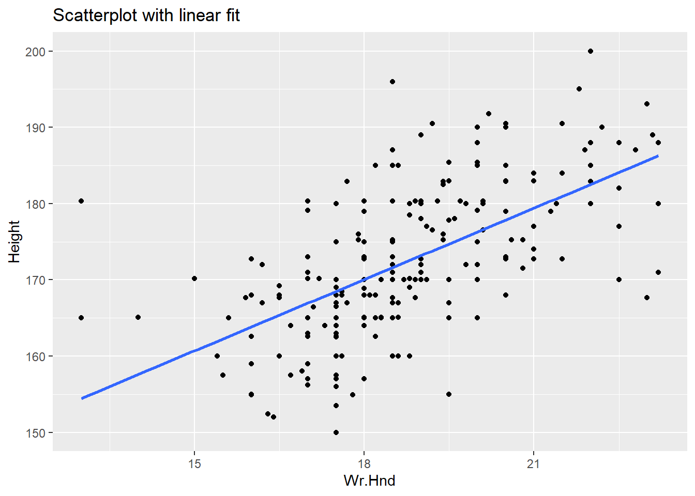
- Find the LSRL of student height by handspan.
\[\hat{y}=113.95+3.126x\] Where x is the handspans (of their writing hand) in cm, and \(\hat{y}\) is the prediceted heights in cm. Find correlation coefficient and interpret the result. There is moderate, positive, linear association between handspans and heights.
Interpret the slope and y-intercept. Slope: for each centermeter increase in handspan, there is approximately increase of 3.12 cm in height. y-intercept: when the handspan is 0 cm, there predicted height is 113.95 cm.
10.17 Residuals (error)
- The vertical deviation between the
- observations & the LSRL
- the sum of the residuals is always zero
- error = observed - expected
- \[residual = y-\hat{y}\]
10.18 Resudual Plot
- A scatterplot of the (x, residual) pairs.
- Residuals can be graphed against other statistics besides x
- Purpose is to tell if a linear association exist between the x & y variables
- If no pattern exists between the points in the residual plot, then the association is linear.
10.20 Coefficient of determination
- \(r^2\)
- gives the proportion of variation in y that can be attributed to an approximate linear relationship between x & y
- remains the same no matter which variable is labeled x
- Interpretation: Approximately \(r^2\%\) of the variation in y can be explained by the LSRL of x & y.
10.21 Influential point
- A point that influences where the LSRL is located
- If removed, it will significantly change the slope of the LSRL
10.22 Which of these measures are resistant?
- LSRL
- Correlation coefficient
- Coefficient of determination
10.23 Typical Computer output (using the “cars” dataset)
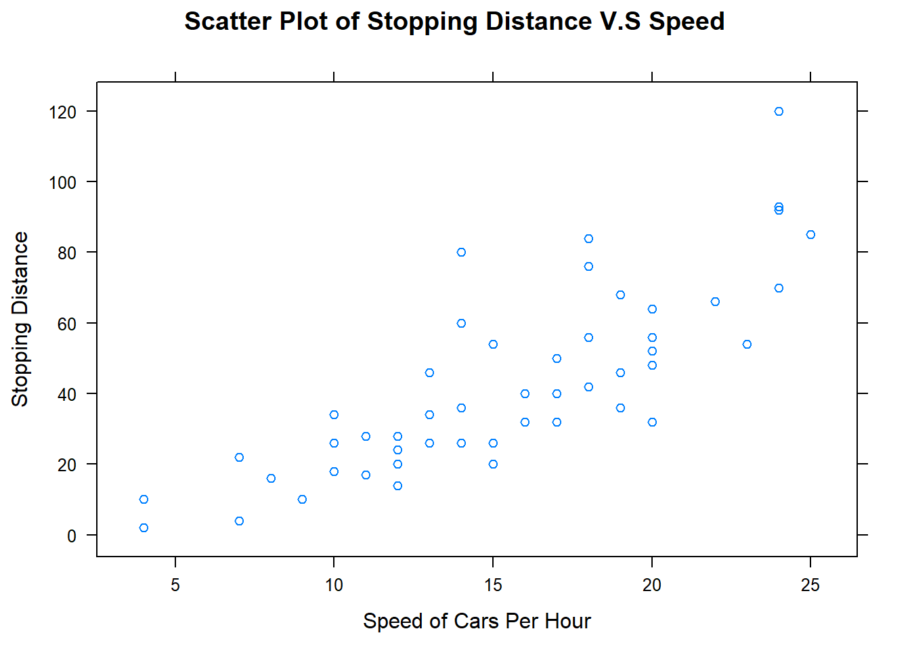
##
## Call:
## lm(formula = cars$dist ~ cars$speed)
##
## Residuals:
## Min 1Q Median 3Q Max
## -29.069 -9.525 -2.272 9.215 43.201
##
## Coefficients:
## Estimate Std. Error t value Pr(>|t|)
## (Intercept) -17.5791 6.7584 -2.601 0.0123 *
## cars$speed 3.9324 0.4155 9.464 1.49e-12 ***
## ---
## Signif. codes: 0 '***' 0.001 '**' 0.01 '*' 0.05 '.' 0.1 ' ' 1
##
## Residual standard error: 15.38 on 48 degrees of freedom
## Multiple R-squared: 0.6511, Adjusted R-squared: 0.6438
## F-statistic: 89.57 on 1 and 48 DF, p-value: 1.49e-12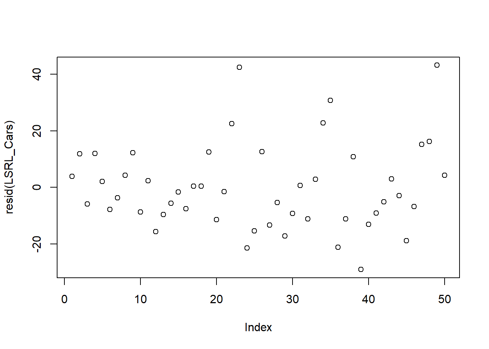
10.24 Practice
An analysis of the Acme Trucking Corporation’s bills of lading for the freight charge for a standardsized
crate reveals the following:
Destination Distance (hundreds of miles) 8 11 13 16 18 19
Charge (to nearest dollar) 50 62 65 70 75 80
- Compute and interpret the value of the correlation coefficient in context of the problem.
DDistance<-c(8, 11, 13, 16, 18, 19)
Charge<-c(50, 62, 65, 70, 75, 80)
LSRL_Charge<-lmGC(Charge~DDistance, graph = TRUE)
LSRL_Charge##
## Linear Regression
##
## Correlation coefficient r = 0.9843
##
## Equation of Regression Line:
##
## Charge = 32.3761 + 2.444 * DDistance
##
## Residual Standard Error: s = 2.0871
## R^2 (unadjusted): R^2 = 0.9689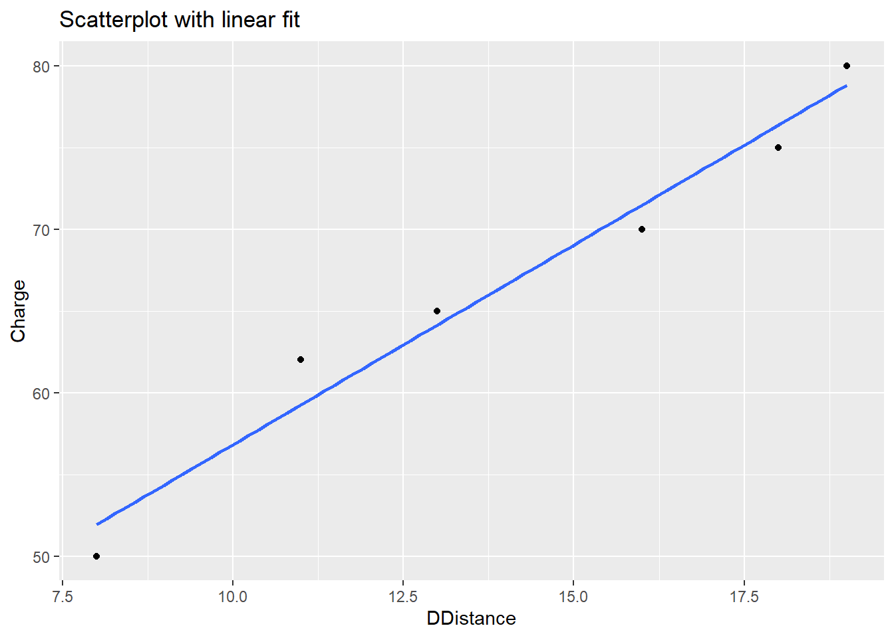 There is a postive, strong, linear assocation between destination distance and charge.
Compute the LSRL. Interpret the slope and y-intercept in context of the problem.
\[\hat{y}=32.38+2.44x\] x is the destinatinon distance and \(\hat{y}\) is the predicted charges.
Slope: For each mile increase in the destination distance, there is approximately $2.44 increase in charges.
y-intercept: When the truck doesn’t move, the predicted charge is $32.38.Predict the charge when the destination distance is 12 hundreds of miles.
## Predict Charge is about 61.7,
## give or take 2.304 or so for chance variation.The predicted charge is about $61.7.
Find \(r^2\) and interpret the result. \(r^2=0.97\): Approximately 97% of variation in charges can be explained by the LSRL of destination distance and charges.
Is this an appropriate equation for this data? Explain.
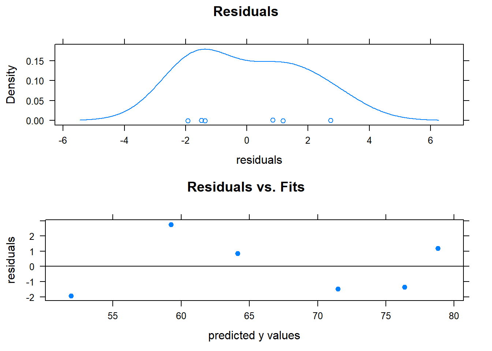 Based on the scatter plot, there is a linear assocation between destination distance and charges. Also, there is “no” pattern shown on the residual plot. As a result, this is an appropriate equation for this dataset.

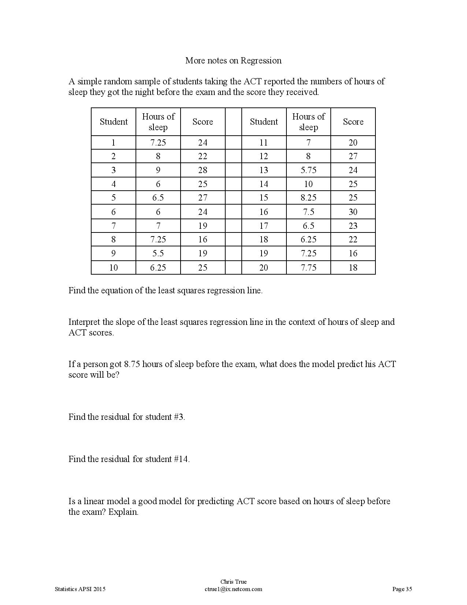